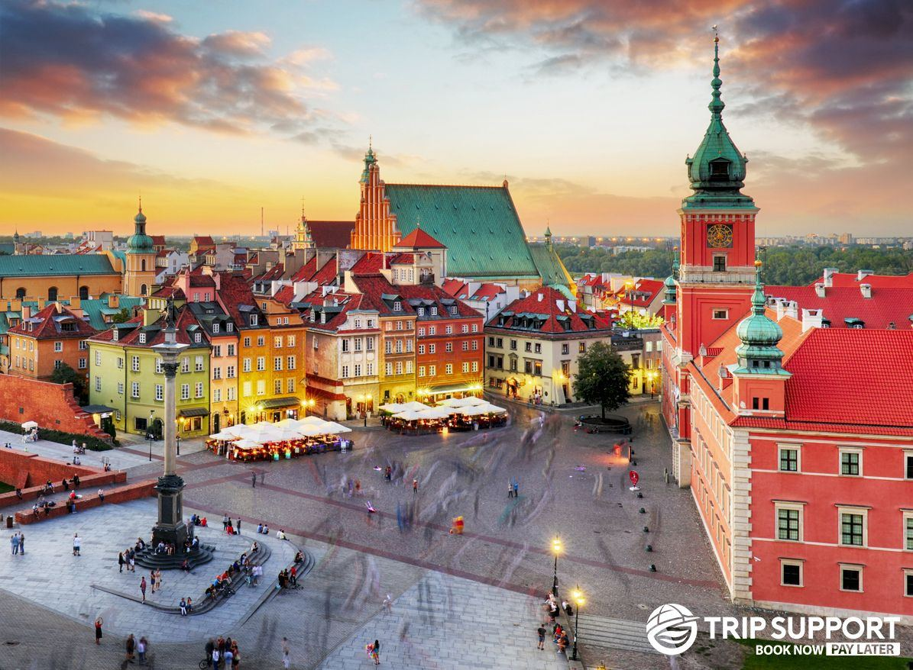
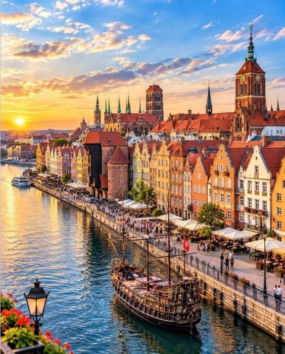
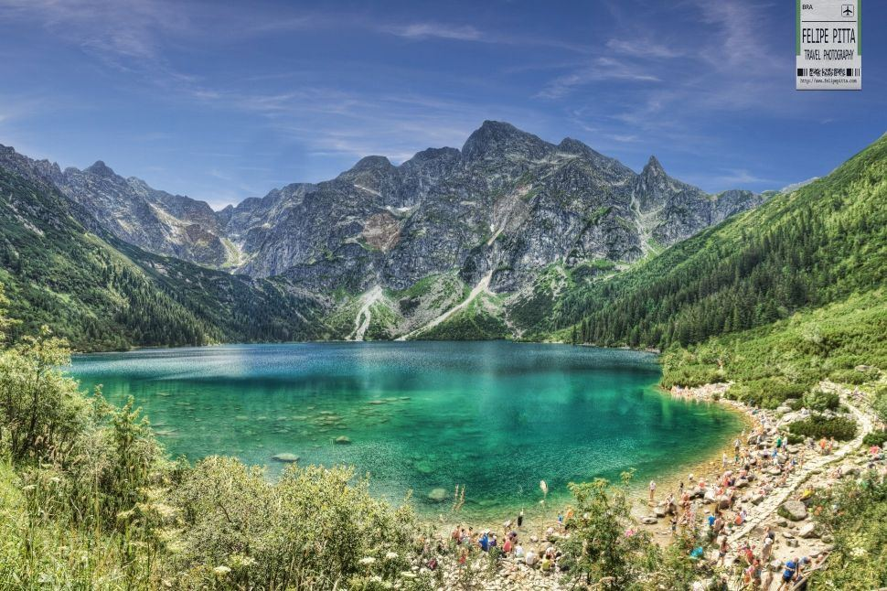

Voyage en Pologne
Découvre la Pologne avec un guide local
Cracovie, Varsovie, Gdańsk, Zakopane : des circuits uniques, des guides passionnés, et Smok pour t'apprendre le polonais.
Viens lire ma légende !

Destinations
Où veux-tu partir ?
Clique sur une ville pour la découvrir.

Incontournable
Cracovie
La ville du dragon Smok, du château du Wawel et de la plus grande place médiévale d'Europe.
Découvrir →
Capitale
Varsovie
Une capitale qui renaît : vieille ville reconstruite, musées et vie nocturne.
Découvrir →
Bord de mer
Gdańsk
Le grand port de la Baltique : maisons colorées, quais de la Motława et plages tout près.
Découvrir →
Montagne
Zakopane
Au pied des Tatras : lacs, randonnées, chalets en bois et fromage oscypek.
Découvrir →38 Md'habitants
17sites UNESCO
4villes sonigo
1000ans d'histoire
Gastronomie
La Pologne se goûte aussi
Pierogi, bigos, żurek, pączki… découvre les plats que tu dois absolument goûter.
Voir les plats

L’appli sonigo
Ton guide local dans la poche
Choisis ta ville, ton circuit et ton guide, réserve en 2 minutes et discute avec lui avant le départ.
Voir comment ça marche